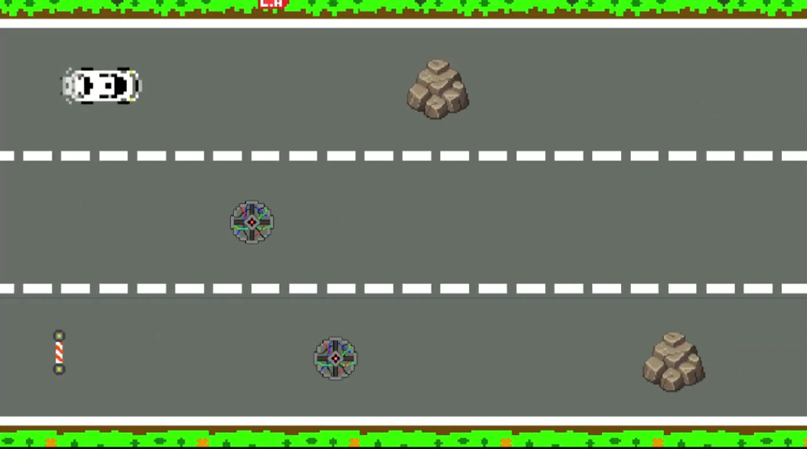

Met l'Audi — Code Game Jam
Thème : Mélodie à l'infini

Met l'Audi — Code Game Jam
Projet événementiel dans le cadre de la Code Game Jam. Thème : Mélodie à l'infini
Contexte
Dans le cadre d'un évènement nommé la Code Game Jam, il nous a été demandé de développer un jeu vidéo sur le thème « Mélodie à l’infini » en moins de 30 h, en présentiel ou à distance.
Nous avons choisi un jeu en 2D où le but était d'éviter des obstacles avec une voiture afin de ne pas interrompre la musique de fond.
Contribution personnelle
- Réaliser le design du jeu (animation, map…)
- Réaliser une musique, des sons et des bruitages
- Me familiariser avec le moteur de jeu Unity
- Créer la base des déplacements de la voiture en C#
Ce que j'ai appris...
- Savoir répartir les tâches efficacement
- Savoir gérer son stress et sa fatigue, surtout à 3h-4h du matin
- Savoir être bien organisé
- Apprendre les bases du C#
- Utiliser des logiciels de design de base comme Piskel